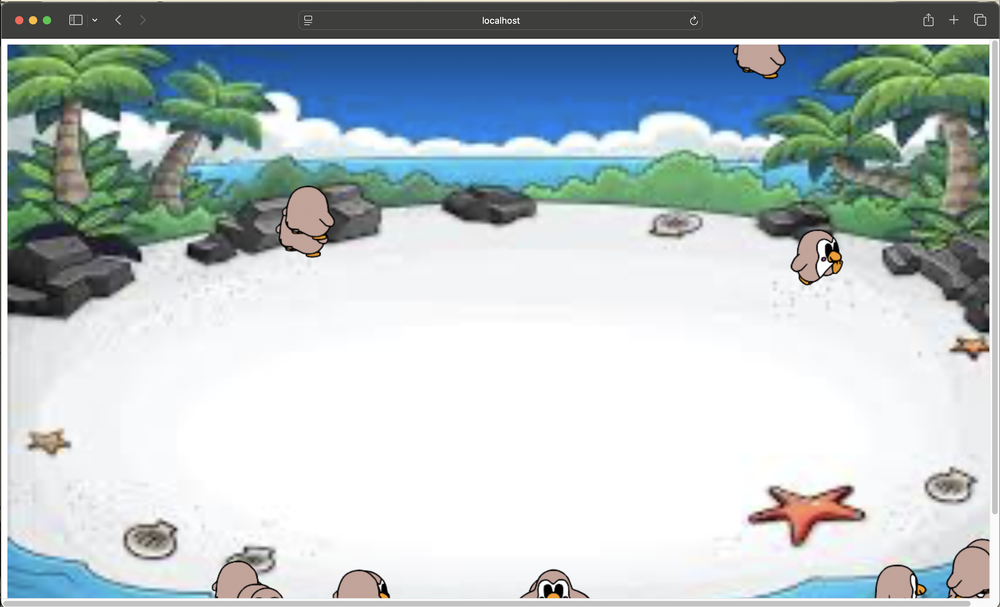
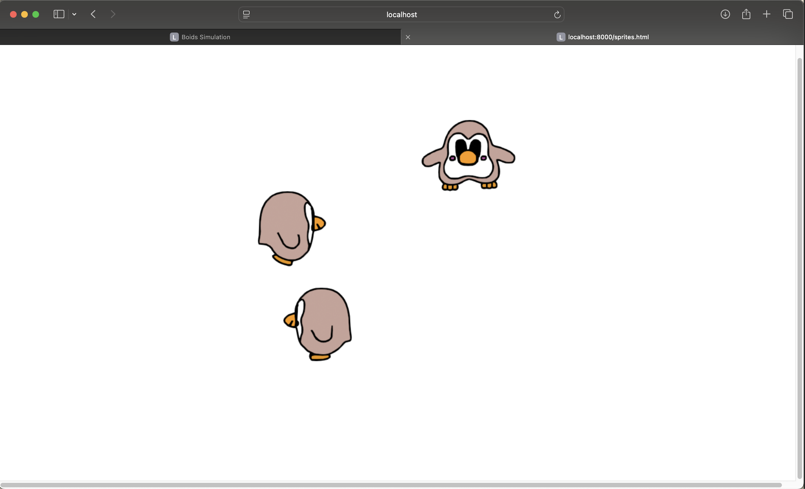

Parsing Graphical User Interface
Download Project FileIn this project, I created a graphical user interface that parces entered lines of code.
Before starting on my Boids project, I learned how to do basic sprite animations. This project demonstrated sprite idle and walking animations, as well as keyboard controls, mouse click control, and bounds control sprites.
 Download Sprite FileKey Features
🔘
Technologies Used: HTML, CSS
Resources Used: jquery